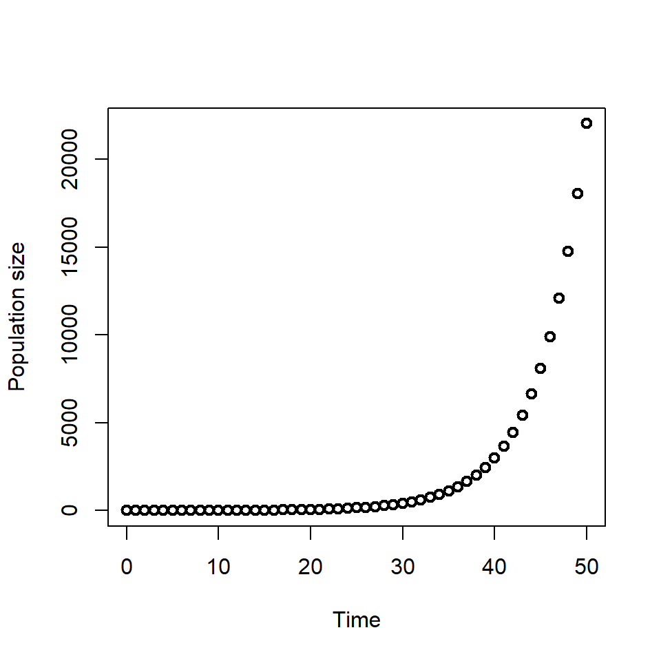
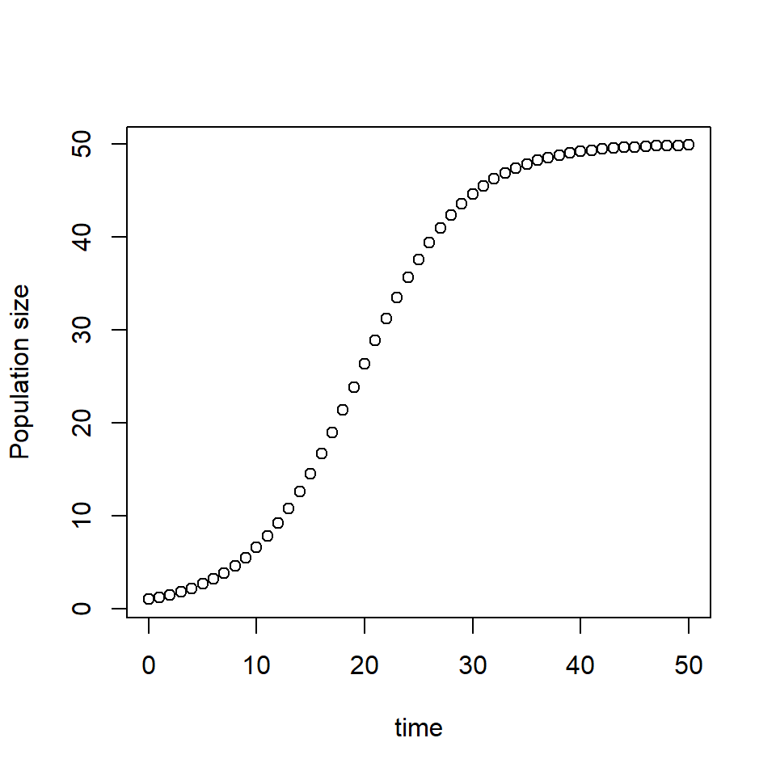

# Set the initial condition P(0) =1
P_0 <- 1
# Set growth rate r = 0.2
r <- 0.2Ordinary differential equations
Ordinary differential equations can be used to model the rate of change of one variable with respect to another. They are often used in epidemic and ecological modelling as it allows us to specify the processes which affect the rate of change of populations.
An ordinary differential equation (ODE) is an equation involving an unknown function of one variable and its derivatives.
For example, \(\frac{dy}{dx} = 2x\) is an ODE. We use the terminology “solving” the ODE, to find a “solution”. To solve the ODE \(\frac{dy}{dx} = 2x\) we integrate to find the solution \(y=x^2 +c\).
In the next lessons we will write on ODE to describe population growth, solve the ODE and plot the solution.
Population growth
We want to predict population size over time. The population changes according to two processes: births and deaths. The schematic below represents our model in the form of a flow diagram.
First, we can write down our assumptions from our flow diagram using words: \[ \begin{aligned} \mbox{ population rate of change} & = + \mbox{births} - \mbox{deaths} \\ \end{aligned} \] The population will increase with births and decrease with deaths.
We denote the number of people in the population \(P\). We refer to \(P\) the state variable of the ODE.
Our model will have two parameters, the birth rate \(b\) and the death rate \(m\). The birth rate represents the rate of new births per individual per time step. For example, if \(b=0.1\) and the current population size is \(P = 10\), the new births are \(bP=1\).
Our notation for the rate of change with respect to time is \(dP/dt\), therefore our ODE model is:
\[ \begin{aligned} \frac{dP}{dt} & = b P - m P \end{aligned} \]
We can simplify this equation by writing the overall growth rate \(r\) as the difference between the birth and death rate, \(r = b - m\).
\[ \begin{aligned} \frac{dP}{dt} & = r P \end{aligned} \]
To find the solution to this ODE, we must integrate.
Population growth solution
To find the solution to the population growth ODE we will use the separation of variables method.
- Separate the variables.
We move all of the terms including \(P\) to the left hand side of the equation, and all the terms including \(t\) to the right hand side of the equation. To this we multiply by \(dt\):
\[ dP = r P dt\] and then divide by \(P\),
\[\frac{1}{P} dP = r dt\] 2. Integrate both sides
\[ \begin{align} \int \frac{1}{P} dP & = \int r dt \\ \ln(P) & = r t + c \end{align} \]
where \(c\) is the constant from both sides.
- Simplify the solution
Then take the exponent of both sides and separate out the constant.
\[ \begin{align} P & = \exp(r t + c) \\ & = \exp(r t) \exp(c) \\ \end{align} \]
To find a value for the constant, we substitute \(t=0\),
\[ \begin{aligned} P(0) &= \exp(0) \exp(c) \\ &= \exp(c) \end{aligned} \] Therefore we can write the constant \(\exp(c)\) with the value of the state variable at time 0,
\[ \begin{aligned} P(t) &= \exp(r t) P(0) \\ &= P(0) e^{rt}. \end{aligned} \]
The population size at time \(t\), can be found using the above equation given an initial value of the population at time 0 \(P(0)\) and the growth rate \(r\).
Plotting the solution
We have our solution \(P(t)= P(0) e^{rt}\). To plot the solution we need the following,
- the initial state \(P(0)\) is the value of our state variable at time 0,
- the growth rate of parameter \(r\),
- the time we wish to find the solution for \(t\).
We assume the population size starts at 1 so we have \(P(0)=1\), and grows at rate \(r = 0.2\). In R we assign these values as follows.
We will find the solution for 50 time points.
# Specify the time t which we want to plot the solution
times <- seq(from = 0, to = 50, by = 1)
# Find the population at time t using the solution to the ODE
P_t <- P_0 * exp(r * times)
# Plot the solution
plot(times, P_t, xlab = "Time", ylab = "Population size", lwd = 2)
We will see later in the course that we cannot always find an equation for the solution to the ODE (this is called the analytical solution), instead we have to perform numerical integration to find the solution.
Equilibrium states
Equilibrium states (or points) occur when a system is at equilibrium i.e. there are no changes to the state variable values. An equilibrium state for a differential equation is a solution where the value of the state variables does not change over time.
Recall when the derivative of a line is 0, the gradient is 0 - which means that the line is flat. Given that differential equations represent the rate of change of a state variable, when a differential equation is 0 - there is no change in the state variable, the gradient of the solution of the ODE is 0.
In epidemic and ecological modelling we are interested if our ODE or ODEs have equilibrium states, what values they take and what conditions lead to the model reaching equilibrium. In the next lesson we will consider an extension to the population growth model which as an equilibrium state.
Population growth with carrying capacity
In our previous example, we formulated an ODE to describe population growth. In the solution, the population grew exponentially. A more realistic model of population growth will include some kind of limit to the population size.
The ODE below describes a population growth with a ‘carrying capacity’ \(K\). \[ \begin{aligned} \frac{dP}{dt} & = r P \frac{(K-P)}{K}. \end{aligned} \] To further understand this equation, consider the following questions:
If \(K>P\), is \(\frac{dP}{dt}\) positive or negative?
\(\frac{dP}{dt}\) is positive, the population size is growing with respect to time because the population has not reached its carrying capacity
If \(K<P\), is \(\frac{dP}{dt}\) positive or negative?
\(\frac{dP}{dt}\) is negative, the population size is decreasing with respect to time as the population size is above its carrying capacity
If \(K=P\), what does \(\frac{dP}{dt}\) equal?
\(\frac{dP}{dt}=0\), the population is at is carrying capacity and does not grow in size or decrease
To explore the dynamics of this model, we need to find the solution to the ODE.
Population growth model equilibrium states
We can find a solution by hand (an analytical solution), but it’s more challenging than the population growth equation without carrying capacity. We won’t focus on the steps of finding the solution here, instead we will focus on the behaviour of the model.
The solution to the ODE is,
\[ P(t) = \frac{K}{1+Ae^{-rt}} \quad \mbox{where } A=\frac{K-P_0}{P_0} \] where \(P_0 = P(0)\), the initial population size at time \(t=0\).
We can plot the solution for given initial condition \(P(0)\), growth rate \(r\), and carrying capacity \(K\).
Before we do this, what do you think the equilibrium points will be? In other words, when will \(\frac{dP}{dt}=0\)?
Let’s return to the ODE equation,
\[ \begin{aligned} \frac{dP}{dt} & = r P \frac{(K-P)}{K} \end{aligned} \] The gradient is 0 when this expression is equal to 0 i.e. \(\frac{dP}{dt}=0\). For what values of the state variables and parameters is this expression equal to?
Let’s first expand the terms on the right hand side of the equation: \[ \begin{aligned} \frac{dP}{dt} & = r P \frac{(K-P)}{K} \\ &=r P - \frac{r P^2}{K} \end{aligned} \]
If we set the left hand side of the equation to 0, we have:
\[ \begin{aligned} 0&=r P - \frac{r P^2}{K} \\ r P K &= r P^2 \end{aligned} \] When does the left hand side of the equation equal the right hand side of the equation?
- \(P=0\) the population size is 0,
- \(P=K\) the population at carrying capacity.
Let’s consider each of these in turn.
The first case is when the population size is 0, we replicate this by setting the initial state to 0.
# Set the initial condition P(0)=0
P_0 <- 0
# Set growth rate r=0.2
r <- 0.2
# Set the carrying capacity K = 50
K <- 50
# Specify the time t which we want to plot the solution
times <- seq(from = 0, to = 50, by = 1)
# Find the population at time t using the solution to the ODE
A <- (K - P_0) / P_0
P_t <- K / (1 + A * exp(-r * times))
# Plot the solution
plot(times, P_t, xlab = "time", ylab = "Population size")When \(P=0\),here specified as \(P(0)=0\) the population remains at 0.
# Set the initial condition P(0)=1
P_0 <- 1
# Set growth rate r = 0.2
r <- 0.2
# Set the carrying capacity K=50
K <- 50
# Specify the time t which we want to plot the solution
times <- seq(from = 0, to = 50, by = 1)
# Find the population at time t using the solution to the ODE
A <- (K - P_0) / P_0
P_t <- K / (1 + A * exp(-r * times))
# Plot the solution
plot(times, P_t, xlab = "time", ylab = "Population size")
With \(P(0)=1\) and \(r=0.2\), we see that the gradient of the solution is 0 when \(P=K\) i.e. when the population is at carrying capacity.